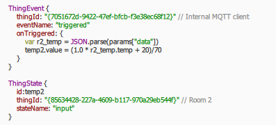
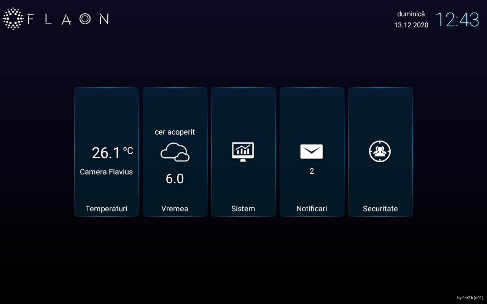
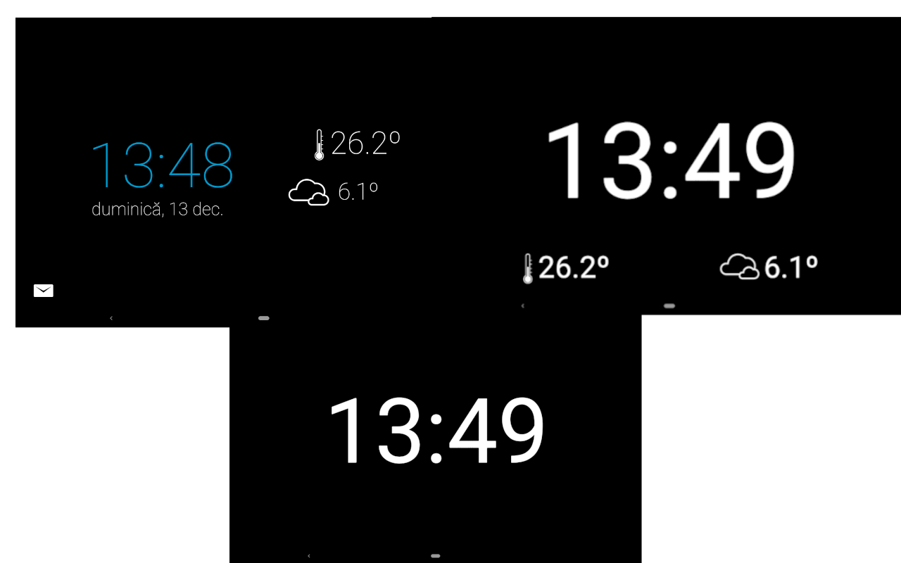
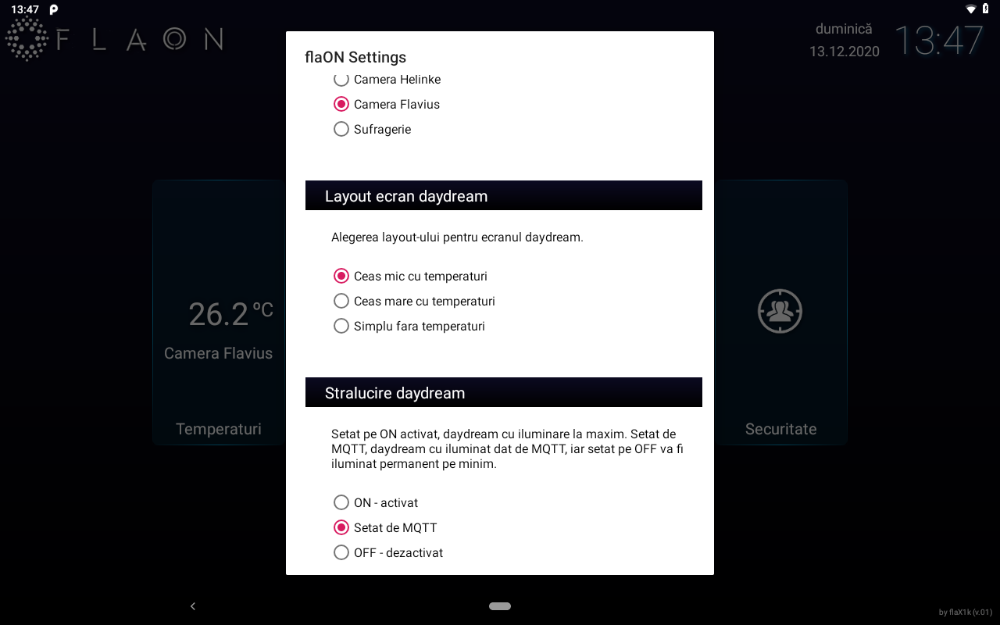

New updates for flaON project
My flaON project has received a few new important updates which makes it more stable, faster, and stable.
nymea:core - the first big update is the dedicated use of nymea:core. Excellent gateway, stable, fast, small, coded by some german guys, with Qt & java scripting capabilities, that integrate very well with my needs.
I managed to migrate all my python scripts to Qt and JS (running in nymea:core), so my calendar events and weather details are active and operational, plus some cool options like daylight and temperature monitoring.
nymea:core uses the concept of smarthings and it's very easy to code and understand.

flaON android app - the second great update is the android app that runs on my tablets. The nymea system has its own nymea:app, but I prefered to build&code my own android app.
All data is now stored in a service running in the background, the main activity has moved to AppCompatActivity with an implementation of navigation listener and fragments UI. This is a masive upgrade.
The android app's layout has changed a little like the image below, with additional customizable sound notifications and visual effects.

Also, there are now three options of daydream layouts like in the image below (small and detailed, big and semi-detailed, plus a simple clock layout).

The brightness of the daydream layout has three options of settings: full brightness, set by mqtt (the daylight boolean of weather thing from nymea) or minimum brightness.

Some future intents for my flaON project are: